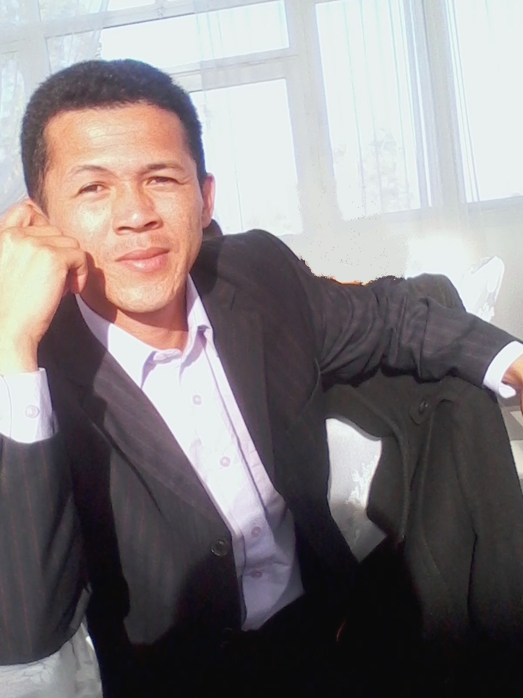

A propos de Hevitriavotana
Hevitriavotana veut littéralement dire « idée pour s’en sortir ». C’est un concept qui a pour but final
d’aider les gens à avoir une vie meilleure dans presque tous les domaines : santé, bien-être, famille,
études, social, argent, carrières, business, projet, vie de couple, éducation des enfants (parentalité).
Le créateur du concept s’appelle Iavotana ANDRIAMAHOLY. Coach en Développement Personnel et
Professionnel, c’est aussi un auteur de livre. Il enregistre actuellement plus de 17 années
d’expériences professionnelles dans un environnement multiculturel, multicompétent au niveau
international. Personnellement, sa famille a longtemps vécu dans la pauvreté, sa vie était morose et il
a souvent souffert de plusieurs maladies pendant au moins les 25 premières années de son existence.
Voici un extrait de son histoire :
Dès sa naissance, aucun des conforts normalement destinés à un bébé ne lui avaient été préparés que
lui-même se souvient d’avoir porté une culotte de sa mère comme pantalon vers 3 ans.
Vers l’âge de 5 ans, sa famille s’était fait expulsée de son appartement au point que sa mère a dû vivre
des jours sous un pont et son père dans la rue. Lui, ses 5 frères et sa sœur éparpillés chez les oncles
et tantes. Depuis, ils étaient nommés les 4’amis, les « panneaux solaires », les ratés, etc… Car ils ne
trouvaient à manger que 1 à 2 fois tous les 2 à 3 jours qu’ils avaient failli plusieurs fois trouver la
mort.

Entre 14 ans à 38 ans (pendant 24 ans), il a souffert de maladie chronique de l’estomac. Son grand-père
en est décédé et son père a dû subir une opération à ses 21 ans à cause de cette même maladie.
Ajouté à tout cela, il souffrait pendant des années d’une trouble de la personnalité qu’entre 2017 à
2021, il a été atteint d’une maladie mentale grave appelée « schizophrénie ». Du coup, il a été interné
plusieurs fois dans des hôpitaux psychiatriques. Il devait être suivi par plusieurs psys et médecins et
devait prendre des médicaments tous les jours pendant des années mais ça ne lui convenait pas. Donc, il
a décidé de trouver d’autres solutions pour s’en sortir, il les a trouvées et il s’en est guérit à 80%.
Et vous savez quoi ! Pendant tout ce temps, il a gardé le courage d’étudier, de comprendre, de rechercher
et surtout de continuer à vivre. Avec sa femme, il a réalisé un de ses plus grands objectifs, ne plus
être un « 4’ amis ». Depuis 2017, sa famille se nomme les 3, ensuite les 4 « I » : Iavotana, Irène,
Iorenantsoa et Ilontsoa.
Il s’est rendu compte que toutes ces épreuves qu’il a dû traverser et surpasser étaient utiles et
nécessaires pour le réveiller et lui dire que « oui, il est capable de surmonter n’importe quelle
difficulté ». Et que son message en passant « si j’ai pu le faire, vous pouvez le faire ».
Sa méthode est tirée de ses expériences personnelles qui lui avaient souvent coûté sa santé et presque sa
vie, des enseignements de plusieurs mentors célèbres et collaborateurs proches. Elle est simplifiée et a
pour but de vous aider à trouver plus vite que d’habitude des solutions à vos problèmes.
Ses plus grandes réussites a-t-il dit : « de trouver le courage de survivre pour ensuite juste vivre, de
réussir à maintenir un état de santé acceptable et d’avoir réussi à aider les autres à le faire à leur
tour ». « Car souvenez-vous que la santé est la clef de tout succès, c’est la Vérité ».
Quand on est en bonne santé et que, si jamais, on perdrait notre téléphone, ordinateur, voiture, maison,
villa, avion, il est tout à fait possible de tout racheter ou tout reconstruire de nouveaux.
Mais si jamais, on perdrait notre santé mentale ou physique, sans vous imposer mon avis, répondez juste
honnêtement à ces quelques questions :
- Seriez-vous encore capable de manger, de respirer, de marcher, de faire pipi tout seul sans aide,
comme un grand ?
- Seriez-vous encore capable de vous occuper correctement de vos enfants ou des éventuelles autres
personnes dont vous avez la charge, de votre activité ou de votre entreprise ?
- Quelle Entreprise pourrait (légalement/raisonnablement) ou voudrait vous engager ?
- Si vous êtes encore étudiant, seriez-vous encore capable de continuer correctement vous études ?
« J’ai connu et je connais des gens fortunés qui sont obligés de dépenser des fortunes pour se guérir,
plusieurs ont fini par être paranoïaques, fauchés, malheureux, pitoyables et d’autres décédés. Par
ailleurs, je connais aussi des gens qui sont juste en bonne santé et qui deviennent de plus en plus
riches, heureux, épanouïs et enviables ».
Le système dans lequel nous vivons depuis des années fonctionne comme ceci : « Personne ne se soucie
réellement de vous que quand on voit que vous êtes malade ». Nous-mêmes, nous ne nous accordons pas
assez d’attention envers nous-même que quand nous sommes malades. Car la culture de « Mieux vaut
prévenir que guérir » ne nous avait pas était assez inculquée. Et c’est cela le Développement personnel,
c’est de prendre du temps de se recentrer sur soi en toute conscience, c’est à dire sans attendre qu’un
quelconque facteur néfaste externe, inattendu et imprévu ne survienne, comme une maladie, une crise
d’argent, le décès d’un proche, crise économique…
Ses résultats : il a aidé plusieurs personnes à sortir de la dépression, des hallucinations, de la
misère, à démarrer un business, à créer une Entreprise, à multiplier des chiffres d’affaires, à
harmoniser la vie de couple, de famille, de groupe…